One of Dan’s greatest strengths is the level of customer service he delivers. He approaches customer interactions thoughtfully and professionally, taking the time to ensure clients receive the right support while maintaining an excellent standard of call quality throughout the year.
// grep -Ri "Dan" ./feedback/
FEEDBACK & REVIEWS
Technical ability matters, but so does how you work with people. This page brings together real feedback from SaaS support, retail management and earlier operations roles without making you read everything at once.
4.90/5Caseware CSAT across 29 responses
10+named 5-star public reviews
2026latest formal manager assessment
$ ls ./feedback/
caseware/ cash-converters/ kwik-fit/
$ echo "select a source to inspect"
select a source to inspect
// feedback/index
Choose a feedback source
Each section expands independently, so employers can jump straight to the evidence most relevant to them.
Caseware SaaS Support · Manager assessment · Client CSAT 4.90 / 5
// caseware/professional_feedback.log
Caseware feedback
Formal manager feedback and client CSAT from my current SaaS support role. Client comments are taken from monthly internal CSAT summaries circulated by the 1st Line Support Team Leader.
Growth & development
Dan has steadily built his confidence and product knowledge, is open to feedback, actively looks for opportunities to learn, and has become a dependable and valued member of the team.
Supporting colleagues
He regularly supports colleagues by volunteering to assist with customer calls and helping others work through more complex cases, not only resolving the issue but helping colleagues understand the solution for the future.
Trust & collaboration
Customers and colleagues can rely on Dan to approach situations professionally, follow through on commitments, share knowledge constructively and bring balanced thinking and clarity to discussions.
// caseware/client_csat.log
Caseware client CSAT
4.90 / 5 average CSAT across 29 responses from six monthly summaries. The table keeps the volume of evidence visible, while stronger and more detailed comments appear first rather than being ordered by date.
| CSAT | Client comment |
|---|---|
| 5 / 5 | Dan was really helpful and definitely went the extra mile to help me. He explained things very clearly and took the time to go through all of my issues on the call. |
| 5 / 5 | Dan was really nice and very helpful in assisting me with the CaseWare issues I was experiencing. He was clear and thorough in his explanations, walking me through the things I need to do. I also learnt something new which will save on efficiencies going forward which I'm excited to share with the team. Overall super satisfied with todays service! :) |
| 5 / 5 | Dan kept going until the solution, which was not at all obvious, presented itself. Thank you. |
| 5 / 5 | Thank you for staying late to get me sorted |
| 5 / 5 | Dan was very helpful in his responses. We didnt know the answer but went to a 2nd liner to ask rather than waste everybodies time. |
| 5 / 5 | Dan was great, very helpful and followed up when I didn't immediately answer. Thank you. |
| 5 / 5 | Dan was very helpful and spoke through the changes and reasons certain changes could not be made. |
| 5 / 5 | really helpful fixed the issues with seconds and walked me through the cloud and helped me with understanding the system better |
| 5 / 5 | Very thorough and patient - thank you |
| 5 / 5 | Dan clearly explained the issue and the ways to resolve it |
| 5 / 5 | Many thanks Dan for your patience and all of your help |
| 5 / 5 | Always efficient, helped solve my (stupid!) problem quickly. Much appreciated. |
| 5 / 5 | Resolved issue swiftly. |
| 5 / 5 | Problems sorted quickly and efficiently, thank you |
| 5 / 5 | Support was excellent. Issue resolved |
| 5 / 5 | The Caseware support team were extremely patient, professional, and knowledgeable throughout the process. I really appreciate their support and would be happy to give them a very positive review. |
| 5 / 5 | Honestly the support you provide is always class. However some of the quirks in your system are so irritating. All the best! |
| 5 / 5 | Amazing help and support. |
| 5 / 5 | great support by Dan and colleagues. |
| 4 / 5 | Dan was really helpful and attentive. |
| 5 / 5 | Excellent help as always |
| 4 / 5 | excellent suport |
| 5 / 5 | Advisor very helpful |
| 5 / 5 | helpful adviser |
| 5 / 5 | Great thank you Dan :-) |
| 5 / 5 | Dan helped my issue very helpful!. |
| 5 / 5 | Dan is great |
| 5 / 5 | Thank you |
Aggregate: 29 source responses across January, March, May, June, July and August 2026. One unresolved 4/5 response is intentionally omitted from the public display; the 4.90/5 aggregate still reflects the complete 29-response source set. Remaining comments are reproduced as supplied, including original spelling and grammar. Source emails are retained privately and can be evidenced on request.
Cash Converters Retail Management · Technical Sales · After-sales ownership 10+ reviews
// cash-converters/public_reviews.log
Cash Converters customer feedback
Public Google reviews from customers I supported while working in store management. The selected examples lead with the strongest evidence of ownership, technical knowledge, communication and after-sales service.
★★★★★
Cash Converters · Maidstone
“We were super-impressed with genuine customer service from Julie and the store manager Dan who personally engaged with DHL to locate and deliver to us our mis-handled parcel… Dan was excellent in communicating what he was doing and what he was aiming to achieve. Absolutely excellent after-sale customer care.”
★★★★★
Cash Converters · Maidstone
“Just want to give a massive shout out to Dan… he sent me some really detailed photos and it looked mint… The package arrived in just a day, well packaged and it looks great. Thanks Dan, you really made a birthday for someone that bit more special.”
★★★★★
Cash Converters · Maidstone
“Dan served me and he gave fantastic customer service, honestly the best one to get served by, and he’s got great knowledge — so if you ever need help or want to know anything go straight to him.”
★★★★★
Cash Converters · Maidstone
“Dan was super helpful with buying my old tech off me. Wonderful service. Beat CEX on price. Will definitely be back in the future to sell anything on.”
// cash-converters/screenshots/
Original review captures
Original screenshots are retained below as supporting evidence. Click any image to open the lightbox.
{kind=link}
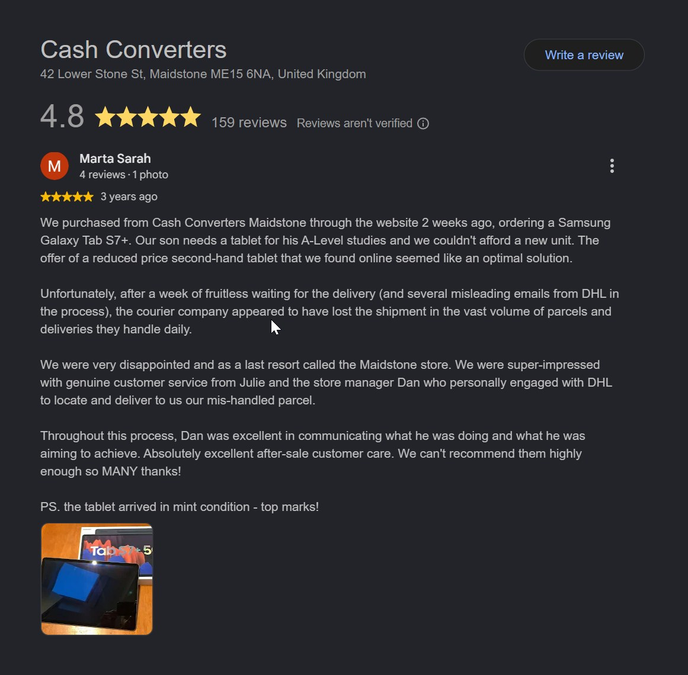
{kind=link}
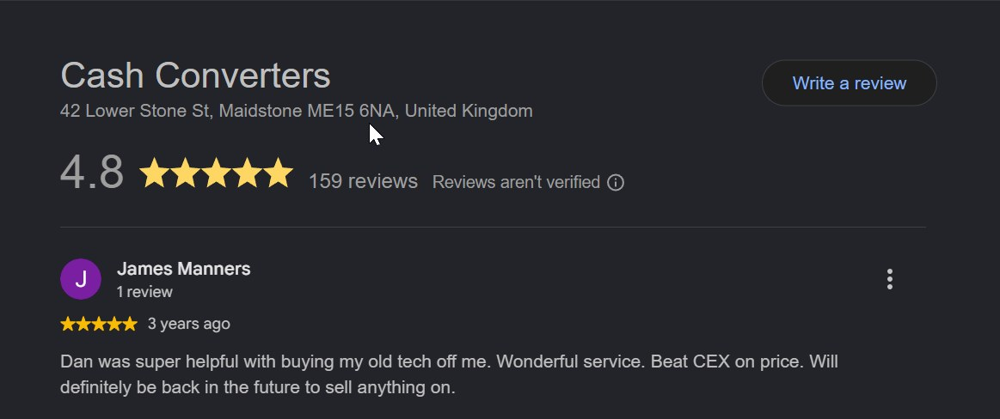
{kind=link}
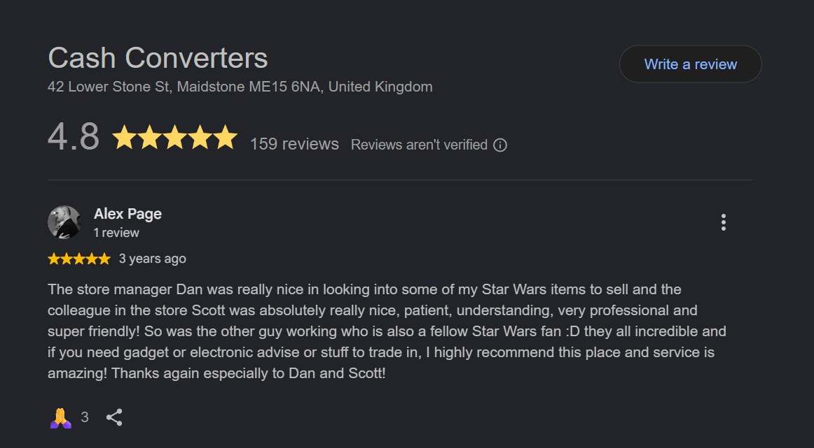
{kind=link}
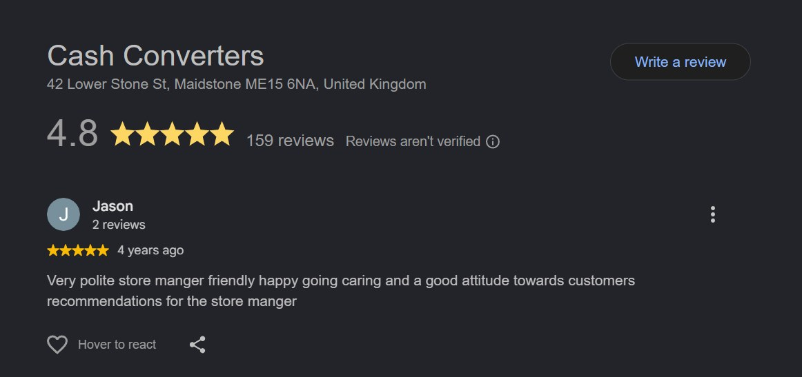
{kind=link}
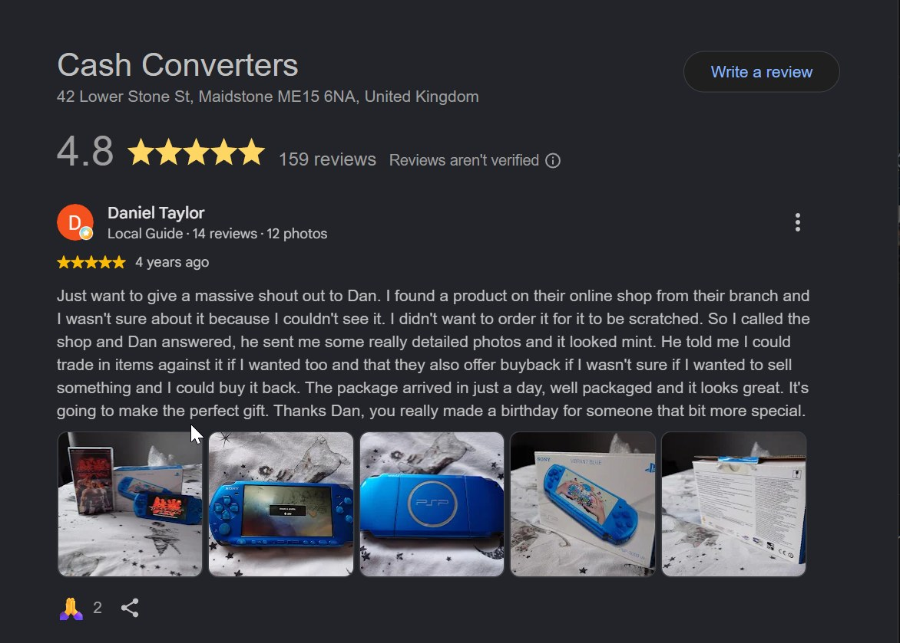
{kind=link}
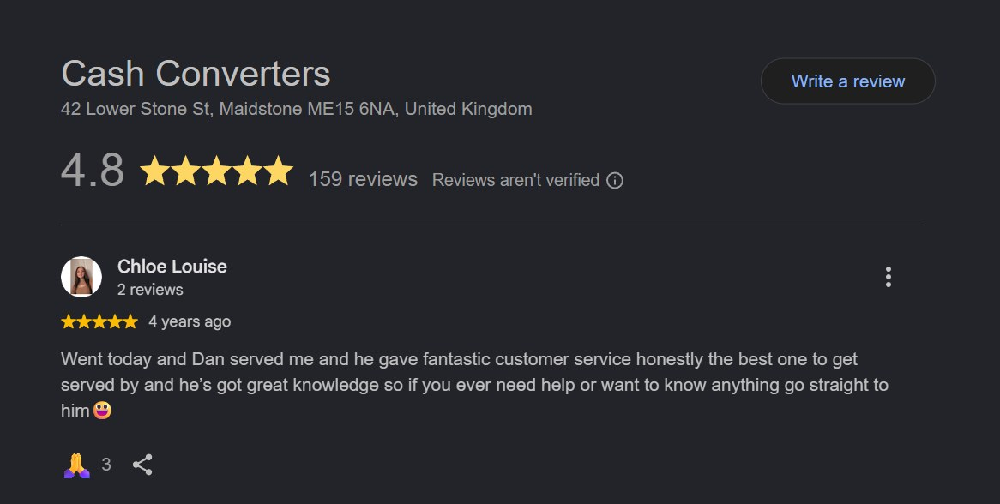
{kind=link}
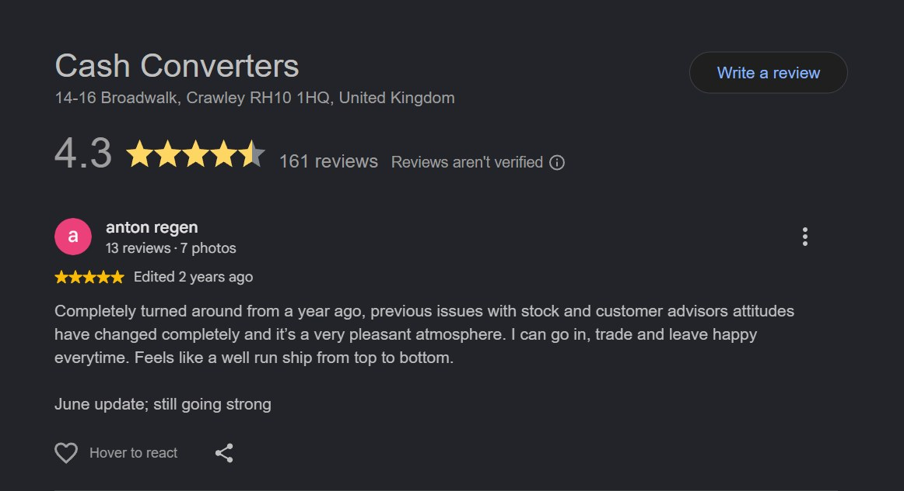
{kind=link}
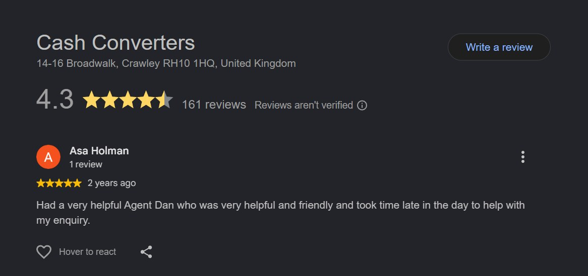
{kind=link}
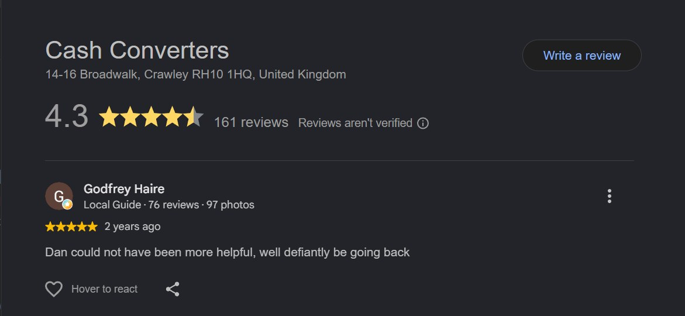
{kind=link}
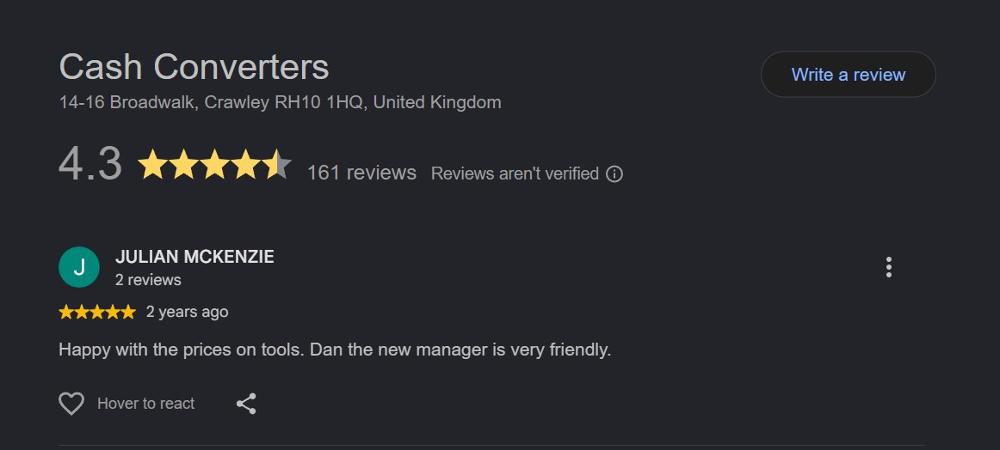
Kwik Fit Retail Operations · Customer handling · Professionalism 1 attributable review
// kwik-fit/public_reviews.log
Kwik Fit customer feedback
One public review in the current evidence set specifically names Dan, so it is shown on its own rather than padded with unattributable store feedback.
★★★★★
Kwik Fit · Strood
“Dan was brilliant. Even though there was a tricky customer who was unnecessarily moaning about EVERYTHING and ANYTHING, Dan remained calm and professional! Well done Dan and great work Kwik Fit Strood!”
// kwik-fit/screenshots/
Original review capture
{kind=link}
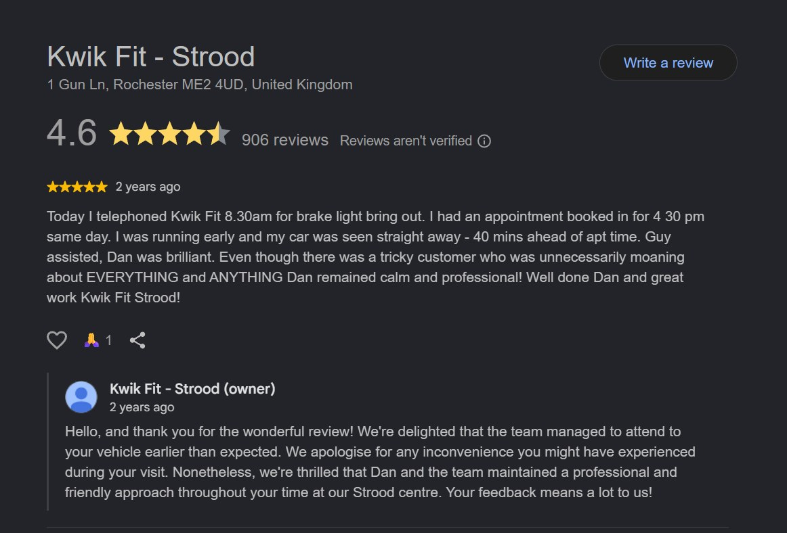